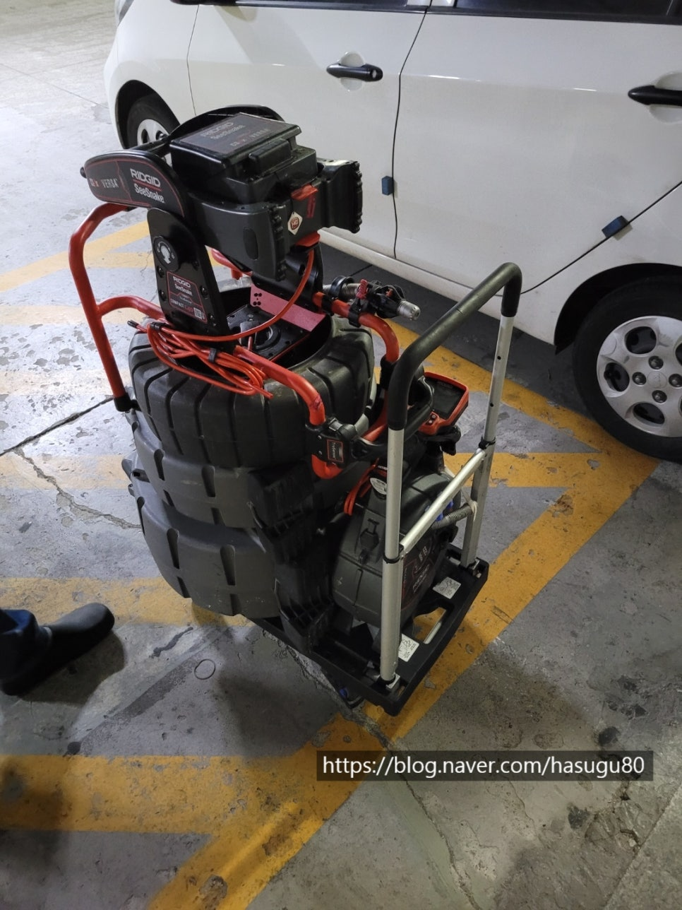
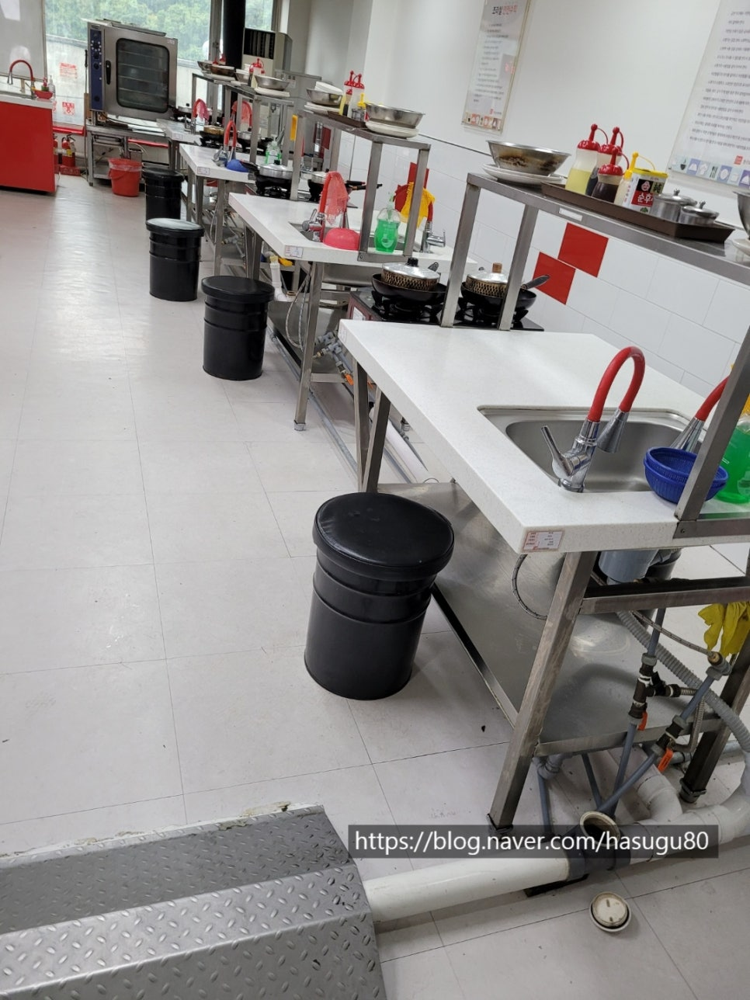
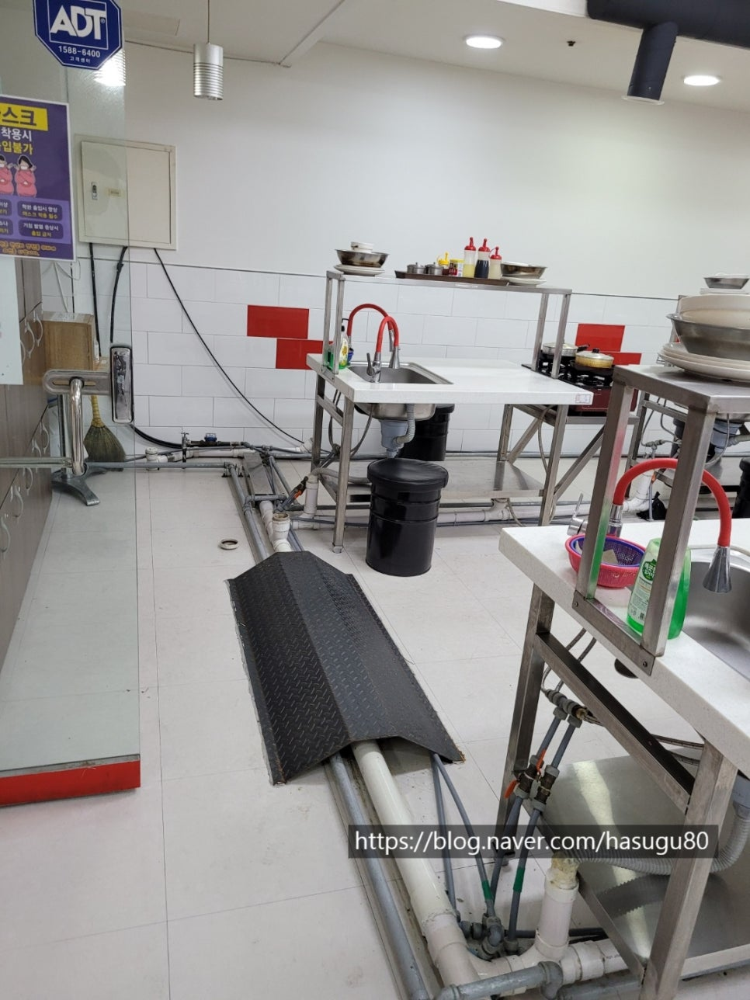
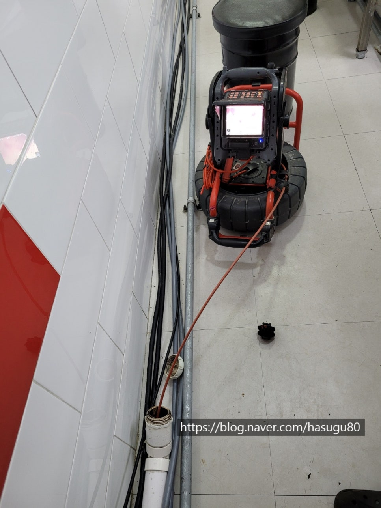
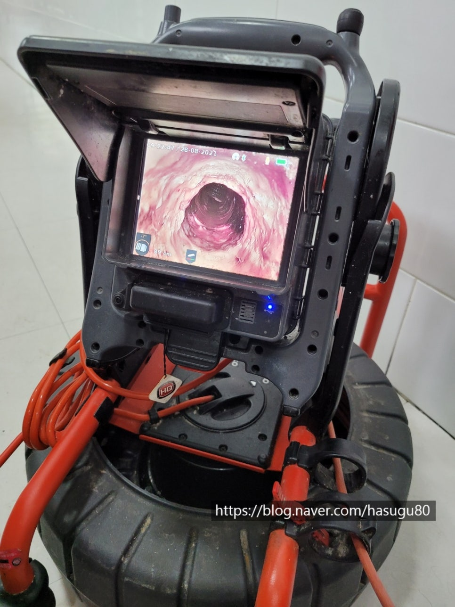
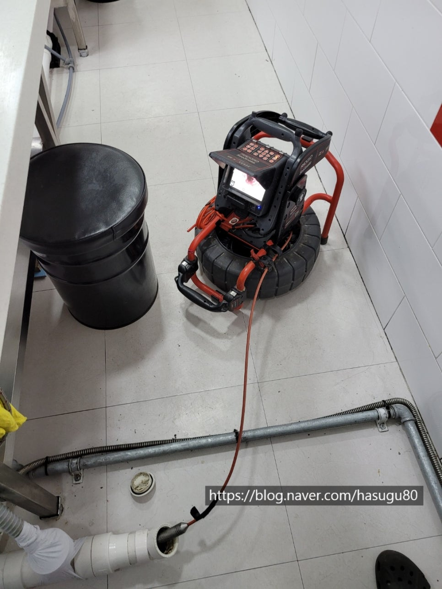
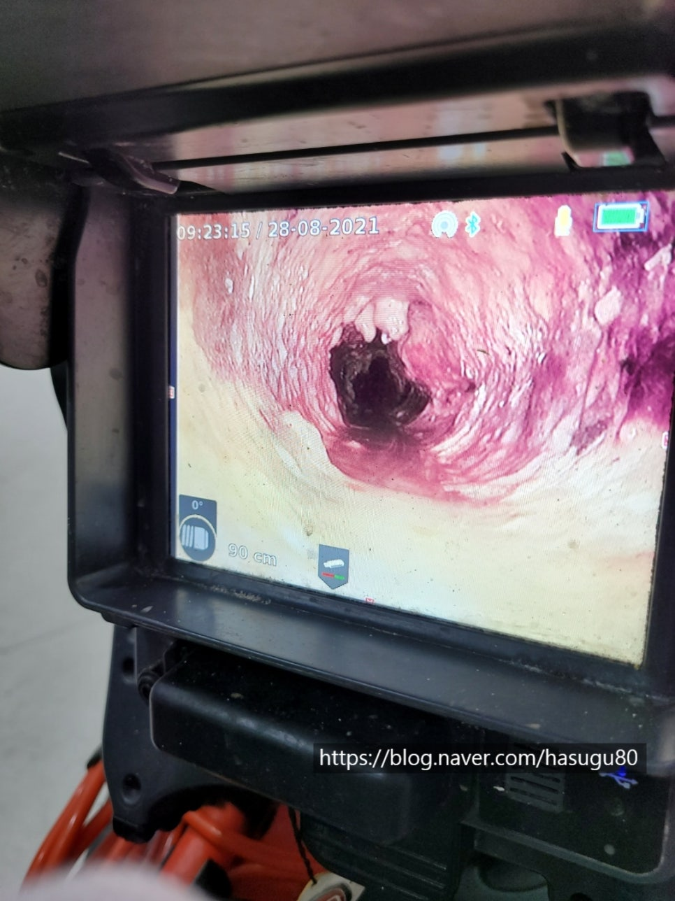

🏠 배관세척 막힘 해결 고압세척
수원 싱크대막힘 전문 시공 후기

📋 작업 개요
- 위치: 수원
- 서비스 유형: 싱크대막힘, 하수구막힘, 배관막힘, 역류해결, 고압세척
- 작업 일시: 2021. 8. 29. 23:09
- 업체명: 하수구수사대 (010-5615-2118)
🔍 문제 상황
안녕하세요 여러분
일하기 좋은 계절입니다.
평일에 쉬고 있는 저는 오늘 일요일도
어김없이 현장을 다니면 보람찬 하루를 보냈습니다.
오늘은 수원에 위치한 한 요리학원을 다녀왔는데요
아무래도 학원에도 요리를 가르치다 보니
조리실 안에는 싱크대가 여러 대가 있고 그 밑으로
배관이 복잡하게 엮여 있습니다.
요리학원 관계자분께서는 실습 도중 배관이 막혀
물이 역류하는 증상이 종종 나타난다고 하여
배관 내시경 검수 후 작업을 진행하기로 했습니다.
장비 준비
#배관 막힘 #배관세척
아무래도 조리실이 넓고 싱크대가 여러 대 있다 보니
배관의 구배가 좋지 않을 수밖에 없다 보니
1년에 한 번씩 예방 차원에서
배관세척을 한다고 하셨습니다.
조리실 배관
배관 중간중간 소재 국가 있어

🔎 원인 분석
💡 전문가 진단: 하수구 수사대010-2340-2118
작업하기는 좋은 현장입니다. 문제는
최종적으로 나가는 쪽 배관이 50mm라서
구조적으로 어쩔 수 없이 배관을 설치하셨답니다.
아무래도 이곳은 5층이라 오피스용 도로 사용하려고 만들다 보니
배관을 대부분 50mm로 최초 건축 시
설계되었을 것입니다.
내시경 검수
우선 배관 상태를 파악하기 위해
내시경 검수를 진행하였습니다.
배관 안에 기름 슬러지가 붉게 붙어있는 것을
확인할 수 있습니다.
보이는 내시경 사진은 75mm입니다.
전체적으로 50mm로 만들지 않고
중간에 65mm 배관에 있어
기름 슬러지가 많이 붙어있는데 이런 것들이
떨어져 최종적으로 나가는 50mm 배관을
막게 되면 물이 역류할 수밖에 없습니다.
우선 큰 덩어리들을 부숴주는
작업을 시작합니다.

🔧 작업 과정
그리고 난 다음 내시경으로 확인 후
남아있는 기름 슬러지를 제거하는
작업을 진행하게 됩니다.
작업 중
지금 배관을 세척하는 장비는 k9이라는
장비인데 배관을 세척하는 장비는 여러 가지가
있습니다.
특히 고압세척 장비가 있는데 배관의 크기에
따라 방식 또는 환경에 따라 달라집니다.
오늘 현장은 실내이고 가장 큰 배관이 65mm이기 때문에
고압세척까지는 필요하지 않습니다.
고압세척은 일반 장비보다는 상대적으로
비용이 비싸기도 하지만 실내에서 사용하기에는
부적합합니다. 특히 학원처럼 바닥 배수구가 없는 곳은
절대 하지 않습니다.
이유는 고압세척은 배관에 있는 기름 슬러지를
빼내는 방식 즉 고압호스를 당기는 방식이라
물이 바닥에 흘러나오기 때문입니다.
주로 외부에서나 식당 주방 또는 욕실에서 가능합니다.
세척작업
중간중간 소재 어구를 열고 세척을 진행하면서
꼼꼼히 내시경 검수도 진행하고 있습니다.^^
배관에 붙어있던 기름 슬러지들이
갈려서 나가고 있습니다.
아무래도 배관도 길고 그동안 쌓였던 것들이
있다 보니 많이 갈려 나옵니다^^
작업 전후 비교 사진
작업 완료
원장님에게 내시경을 보여드리며
작업 브리핑을 끝으로 작업을 무사히 마쳤습니다.
빌딩이나 상가, 아파트와 같이 많은


✅ 작업 완료
세대가 사용하는 건물의 경우 하수구 막힘으로
인한 문제를 사전에 예방하기 위해 정기적은
하수구 세척을 진행해 보시길 추천드립니다^^
저희 하수구 수사대는
서울, 경기, 인천 전 지역 1시간 내
방문이 가능합니다.
하수구 수사대
010-2340-2118




⚠️ 주방 싱크대 배관 막힘 예방 수칙
- ✅ 기름기가 묻은 식기나 프라이팬은 설거지 전 키친타올로 반드시 기름때를 닦아내세요.
- ✅ 주기적으로 싱크대 개수대에 뜨거운 물을 가득 받아 한 번에 내려 배관 내부 기름을 씻어내세요.
- ✅ 배수구 거름망을 미세한 필터로 사용하시고 음식물 찌꺼기가 틈으로 새어 들지 않게 관리하세요.
- ✅ 베이킹소다와 식초를 뜨거운 물과 함께 일주일에 한 번씩 부어주면 배관 살균과 막힘 예방에 좋습니다.
💡 핵심 정리
- 확실한 장비 작업(내시경 점검 및 샤프트 스케일링)으로 원인을 뿌리 뽑습니다.
- 작업 후 1년 이내에 동일한 부위 재발 시 100% 무상 A/S 서비스를 보장합니다.
- 서울 · 경기 · 인천 전 지역에 24시간 언제든 긴급 출동할 수 있도록 항시 대기 중입니다.
❓ 자주 묻는 질문 (FAQ)
🚨 수원 싱크대막힘 문제로 고민이신가요?
정확한 원인 진단과 확실한 시공으로 재발 없는 해결을 약속드립니다.
24시간 긴급 출동 | 서울 · 경기 · 인천 전지역 | 1년 내 재발 시 무상 A/S